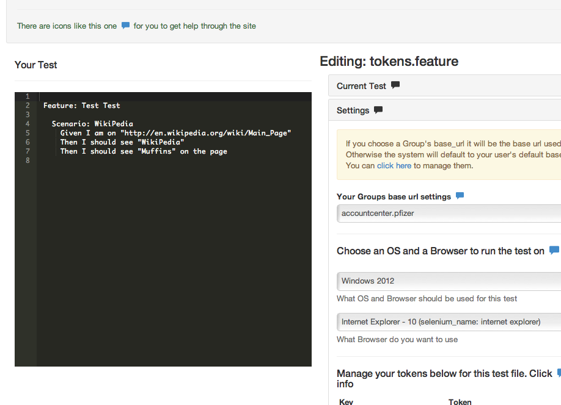

When you are in edit mode you can reload the page with this query string at the end of it ?ace=true This will turn on the ACE editor. You are on your own at this point but it is a great way to crank out a test